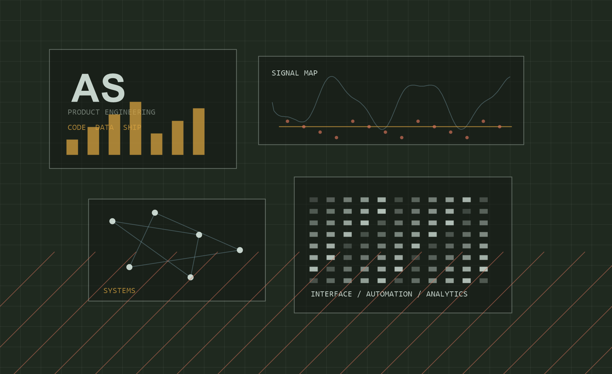

Web Experience
Responsive pages, refined layouts, polished animations, and clear conversion paths.

Atharva Shirgaonkar // Data driven development
A D2C-inspired portfolio for building precise web products: fast frontends, clean systems, operational dashboards, and digital experiences that feel considered from first click to final handoff.
Operating vision
I build websites and tools where the visual layer, technical logic, and user goal all point in the same direction.
The result is a portfolio that feels premium like the reference site, but speaks in Atharva's own language: product thinking, clean execution, and measurable delivery.
Responsive pages, refined layouts, polished animations, and clear conversion paths.
Structured flows, reliable logic, integrations, and maintainable application foundations.
Dashboards, automation, analytics, and feedback loops that make improvement visible.
Proof of work
Insight Dashboard
A decision interface for tracking KPIs, exceptions, growth metrics, and follow-up actions from one calm surface.
Portfolio System
A high-trust web presence with case-study sections, contact flow, fast loading, and a memorable visual system.
Workflow Automation
A lightweight automation layer for project handoffs, checklists, notifications, and release readiness.
Services
Each service is handled as a complete system: positioning, interface, implementation, measurement, and iteration working together.
Method
Clarify audience, goals, content, references, and the first version worth launching.
Turn the direction into responsive code with clear structure, strong visuals, and usable states.
Prepare the project for Vercel with production scripts, optimized assets, and a clean build.
Use feedback to tighten copy, visuals, conversion paths, and future case-study sections.
Available for web builds
Contact
Share the website, dashboard, automation, or portfolio idea you want to turn into a clean shipped product.